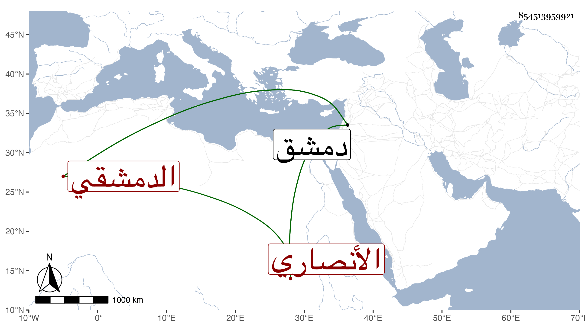

0902Sakhawi.DawLamic.ITO20230111-ara1.EIS1600.854513959921
Biography ID: 854513959921
1053
أنس بن علي بن محمد بن أحمد بن سعيد بن سالم بن عمر بن يعقوب بن عبد الرحمن البدر أبو حمزة الأنصاري الدمشقي . ولد في ربيع الأول سنة تسع وخمسين وسبعمائة وأحضر بواسطة قريبه الصدر بن إمام المشهد على عبد الله بن القيم وغيره وأجاز له العز بن جماعة وأبو الحرم القلانسي وغيرهما ثم طلب بنفسه فسمع ابن أميلة ومحمد بن أحمد بن عبد الرحمن المنبجي وسعيد السبكي وغيرهم وأكثر عن أصحاب التقي سليمان القاضي ونحوه وكان أولا بزي الجند ثم تزيا للفقهاء ولازم ابن المحب وقرأ بنفسه وتميز في علم الحديث وانتقى لنفسه ولبعض شيوخه فخرج للتقي عبد الله بن يوسف الكفري أربعين ، وكان مستيقظا نبيها عارفا بالوثائق معتنيا بالأدبيات مع المروءة والديانة قال شيخنا في معجمه : لقيته بدمشق وسمع معي وكتب عني من نظمي وحدثني بجزء من حديث سعيد ابن منصور ، قال أنابه محمد بن أحمد بن عبد الرحمن المنبجي أنابه أبو نصر بن الشيرازي أنا ابن أبي المكارم المصري إجازة أنا عساكر بن علي أنا الرازي بسنده ثم أثنى عليه بما تقدم ، وقال في الأنباء سمع معي كثيرا وأفادني مات في سادس عشري رجب سنة سبع بدمشق ، وتبعه المقريزي في عقوده باختصار .
